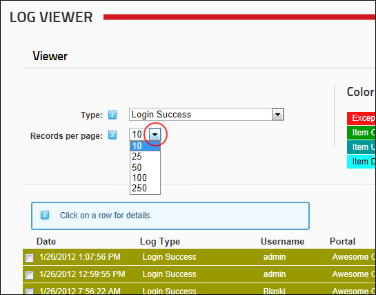

How to set the number of records that are displayed on one page of the Log Viewer module. Ten (10) records are displayed per page by default. You can choose to display up to 250 records per page however the module will default back to ten (10) records each time the page is refreshed.

Setting the number of records displayed per page